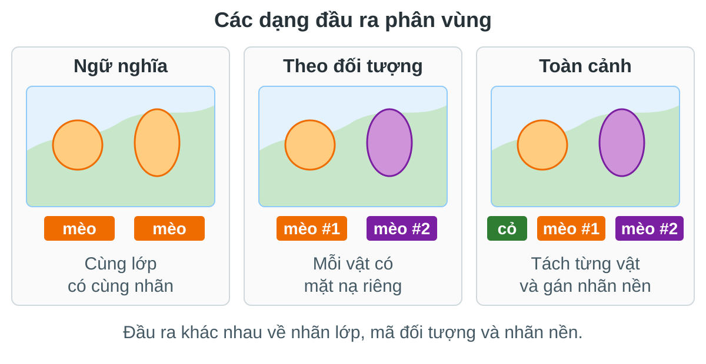

Xử lý và Phân tích Hình ảnh
Bài 12: Phân vùng ngữ nghĩa
FCN · U-Net · DeepLab · U-Net + ViT · Mask R-CNN · Phân vùng toàn cảnh
Trường ĐH Công nghệ · Đại học Quốc gia Hà Nội
Nội dung bài học
Đầu ra theo điểm ảnh, mất mát, độ đo, dữ liệu.
FCN, U-Net, DeepLab, U-Net + ViT.
Mask R-CNN và nhánh mặt nạ song song.
Ghép vật thể và vùng nền thành một đầu ra.
Bài này nối trực tiếp từ phát hiện đối tượng: ta giữ ý tưởng định vị, nhưng chuyển đơn vị dự đoán từ hộp sang điểm ảnh.
Từ hộp bao sang mặt nạ điểm ảnh

Phân vùng ngữ nghĩa không tách hai vật cùng lớp; phân vùng theo đối tượng tách từng vật; phân vùng toàn cảnh làm cả hai trong một bản đồ.
Câu hỏi xuyên suốt buổi học
Bài 11 đã hỏi: ảnh có những vật nào và hộp nằm ở đâu. Bài 12 hỏi chi tiết hơn: từng điểm ảnh thuộc về cái gì.
Làm thế nào biến đặc trưng ảnh thô thành một bản đồ nhãn dày đặc, vừa đúng ngữ nghĩa, vừa sắc ở biên?
Mục tiêu buổi học
Hiểu điểm logit \(C\times H\times W\), mặt nạ, nhãn bỏ qua, mất cân bằng lớp.
Nhìn được vai trò bộ mã hóa, bộ giải mã, liên kết tắt, tích chập rỗng, ASPP, RoI Align.
FCN, U-Net, DeepLab, ViT và Mask R-CNN giải quyết thiếu chi tiết theo các cách khác nhau.
Entropy chéo, Dice, IoU, mất mát tập trung, mất mát mặt nạ và chất lượng toàn cảnh.
1.
Bài toán phân vùng
Đầu ra theo điểm ảnh · nhãn khó · mất mát · độ đo · dữ liệu
Phân vùng là dự đoán dày đặc

Mạng không trả một nhãn cho cả ảnh, mà trả một phân phối lớp cho từng vị trí ảnh.
Đầu ra: điểm logit trước, mặt nạ sau
Dùng điểm logit và softmax để tính mất mát; không lấy argmax vì argmax không khả vi.
Lấy lớp có xác suất cao nhất ở từng điểm ảnh để tạo mặt nạ rời rạc.
Mặt nạ là kết quả cuối để hiển thị; ten-xơ điểm logit mới là đối tượng mà mô hình học trực tiếp.
Phân biệt ba kiểu đầu ra
Mỗi điểm ảnh có một lớp: đường, xe, người, nền. Hai xe cùng lớp bị gộp.
Mỗi vật đếm được có một mặt nạ riêng: xe #1, xe #2, người #1.
Mỗi điểm ảnh có đúng một nhãn: hoặc một vật thể riêng, hoặc một vùng nền.
Cùng một mạng nền có thể dùng cho nhiều kiểu phân vùng; khác biệt chính nằm ở đầu dự đoán và cách gán nhãn.
Bước chuyển tư duy so với phát hiện đối tượng
- Dự đoán một tập hộp bao có nhãn.
- Biên vật thể chỉ được xấp xỉ bằng hình chữ nhật.
- Mất mát tập trung vào lớp, độ có vật và tọa độ hộp.
- Dự đoán nhãn cho từng điểm ảnh hoặc từng mặt nạ đối tượng.
- Biên, lỗ, phần mảnh và vùng mỏng đều quan trọng.
- Mất mát phải nhìn được cả đúng lớp lẫn đúng hình dạng.
Phân vùng không chỉ “chi tiết hơn phát hiện đối tượng”; nó đổi luôn đơn vị học từ vùng ứng viên sang lưới điểm ảnh.
Vấn đề lõi: ngữ nghĩa sâu và biên sắc mâu thuẫn nhau
Nhìn ngữ cảnh rộng, biết “đây là người” hoặc “đây là đường”, nhưng bản đồ đặc trưng thô.
Giữ cạnh, góc, vân ảnh, nhưng chưa đủ ngữ nghĩa để phân biệt lớp khó.
Hầu hết kiến trúc phân vùng là các cách khác nhau để hòa giải mâu thuẫn này.
Mất mát cơ bản: entropy chéo theo điểm ảnh
Tập điểm ảnh được tính mất mát, thường bỏ điểm ảnh không rõ nhãn.
Xác suất mô hình gán cho lớp đúng tại điểm ảnh đó.
Điểm ảnh nền nhiều có thể áp đảo lớp nhỏ hoặc lớp hiếm.
Entropy chéo theo điểm ảnh là nền tảng, nhưng chưa đủ khi vùng cần phân đoạn rất nhỏ hoặc mất cân bằng mạnh.
Khi lớp nhỏ bị chìm trong nền
Nếu 95% điểm ảnh là nền, mô hình có thể đạt mất mát thấp bằng cách rất tự tin vào nền.
Gán trọng số lớp, lấy mẫu vùng khó, dùng mất mát Dice/IoU hoặc mất mát tập trung.
Trọng số lớp nói cho mô hình rằng sai ở lớp hiếm không được coi nhẹ như sai ở nền lớn.
Mất mát Dice và IoU nhìn theo vùng

Entropy chéo hỏi từng điểm ảnh đúng chưa; Dice/IoU hỏi cả vùng dự đoán có chồng lên vùng thật không.
Mất mát Dice: phù hợp khi vật nhỏ
Nếu vùng thật nhỏ, vài điểm ảnh đúng ở vùng đó vẫn tạo tín hiệu học đáng kể.
Mất mát Dice thường được cộng với CE để vừa ổn định từng điểm ảnh, vừa tối ưu vùng.
Trong ảnh y tế, nơi tổn thương có thể rất nhỏ, mất mát Dice thường quan trọng hơn độ chính xác theo điểm ảnh.
Độ đo: độ chính xác theo điểm ảnh dễ gây ảo tưởng
Dễ cao khi nền chiếm đa số. Một mô hình chỉ đoán nền vẫn có thể trông “tốt”.
Tính IoU cho từng lớp rồi lấy trung bình; lớp nhỏ có tiếng nói riêng.
Khi báo kết quả phân vùng, mIoU thường đáng tin hơn độ chính xác vì nó phạt bỏ sót lớp nhỏ.
Độ đo đường biên: khi biên là sản phẩm cuối
Hai mặt nạ có mIoU gần nhau nhưng một mặt nạ có biên răng cưa, lệch cạnh hoặc thủng lỗ.
Y tế, bản đồ, tự hành, đo kích thước vật thể và hậu xử lý hình học.
Đây là lý do U-Net, DeepLab và nhiều bộ giải mã hiện đại đều dành nhiều công sức cho độ phân giải và biên.
Dữ liệu phân vùng đắt hơn dữ liệu hộp
Cảnh đường phố, nhiều lớp vùng nền và vật thể, đánh giá phân vùng ngữ nghĩa/toàn cảnh.
Chuẩn phổ biến cho phân vùng ngữ nghĩa trên ảnh tự nhiên.
Mặt nạ theo đối tượng và toàn cảnh; nối trực tiếp với bài phát hiện đối tượng trước.
Phân vùng thường thiếu dữ liệu sạch hơn phân loại ảnh, nên kiến trúc và mất mát phải tận dụng dữ liệu hiệu quả.
Nhãn bỏ qua không phải chi tiết phụ
- Biên quá mơ hồ giữa hai lớp.
- Vật bị che khuất hoặc quá nhỏ.
- Vùng chưa được gán nhãn trong bộ dữ liệu.
Điểm ảnh bỏ qua không đóng góp đạo hàm. Nếu không xử lý, mô hình bị phạt bởi nhãn không đáng tin.
Một quy trình huấn luyện phân vùng nghiêm túc luôn định nghĩa rõ điểm ảnh nào được tính mất mát và độ đo.
Bản đồ tư duy cho các kiến trúc phía sau
Các phần sau đều xoay quanh cùng một căng thẳng: nhìn đủ rộng để hiểu lớp, nhưng giữ đủ chi tiết để vẽ mặt nạ đúng.
Nhìn lại và đi tiếp
2.
Phân vùng ngữ nghĩa: FCN
Toàn tích chập · điểm lớp theo vị trí · phóng to đặc trưng · liên kết tắt
Phân vùng ngữ nghĩa trả lời một câu hỏi rất cụ thể
Một nhãn lớp cho mỗi điểm ảnh: đường, cây, xe, người, nền.
Không tách xe #1 và xe #2. Hai vật cùng lớp có cùng màu nhãn.
Phân vùng ngữ nghĩa biến bài toán nhận dạng ảnh thành bài toán nhận dạng tại mọi vị trí trong ảnh.
Bước chuyển từ phân loại ảnh sang phân vùng
Cho phép nén toàn ảnh thành một véc-tơ vì chỉ cần một nhãn.
Cần biết vị trí nào thuộc lớp nào, nên phải giữ cấu trúc không gian.
FCN ra đời từ đúng câu hỏi này: làm sao dùng lại CNN phân loại mà không phá mất bản đồ vị trí.
FCN: tổng quan đường đi dữ liệu
FCN giữ mọi bước ở dạng bản đồ đặc trưng, nên có thể dự đoán dày đặc cho ảnh kích thước bất kỳ.
Thành phần 1: bỏ tầng kết nối đầy đủ
Làm mất vị trí \(h,w\) và buộc ảnh đầu vào có kích thước cố định.
Dùng tích chập 1x1 để biến mỗi véc-tơ đặc trưng tại một vị trí thành điểm lớp.
Đây là bước chuyển tư duy chính: mạng không còn kết luận một lần cho cả ảnh, mà kết luận lặp lại tại mọi vị trí.
Thành phần 2: tích chập 1x1 tạo điểm lớp
Tại mỗi vị trí, cùng một bộ trọng số hỏi: đặc trưng này giống lớp nào?
Tạo \(C\) bản đồ điểm lớp, mỗi bản đồ ứng với một lớp cần phân vùng.
Tích chập 1x1 là bộ phân loại tuyến tính được áp dụng đồng nhất trên mọi vị trí không gian.
Thành phần 3: đặc trưng sâu bị thô
Tầng sâu nhìn được ngữ cảnh lớn, nên phân biệt lớp tốt hơn.
Mỗi ô đặc trưng sâu đại diện cho một vùng lớn, nên biên bị thô.
Nếu chỉ dùng tầng sâu nhất, mô hình hiểu đúng lớp nhưng khó vẽ biên chính xác.
Thành phần 4: phóng to bản đồ điểm lớp
Phóng to bằng công thức có sẵn, không học từ dữ liệu.
Dùng trọng số học được để biến bản đồ thô thành bản đồ lớn hơn.
Phóng to đặc trưng là bước bắt buộc để biến điểm lớp thô thành mặt nạ cùng kích thước ảnh.
Tích chập chuyển vị học cách phóng to
Mỗi ô đầu vào rải ảnh hưởng ra một vùng trên bản đồ đầu ra lớn hơn.
Đây là tầng học được, nên tốt hơn việc chỉ phóng to bằng công thức cố định.
Tích chập chuyển vị không “đảo ngược” CNN; nó là một tầng học cách tạo bản đồ lớn hơn.
FCN-32s: chỉ dùng tầng sâu nhất
Thiết kế đơn giản, dùng đặc trưng sâu có ngữ nghĩa mạnh.
Phóng to từ lưới quá thưa, nên mặt nạ dễ bị thô và lệch biên.
FCN-32s cho thấy CNN phân loại có thể làm phân vùng, nhưng chất lượng biên chưa đủ tốt.
Liên kết tắt: đưa chi tiết nông quay lại
Giữ cạnh và vị trí tốt, nhưng ngữ nghĩa yếu.
Hiểu lớp tốt, nhưng vị trí thô.
Tạo điểm lớp ở nhiều tầng, căn kích thước, rồi cộng lại.
Liên kết tắt của FCN là tiền thân trực tiếp của ý tưởng bộ mã hóa - bộ giải mã trong U-Net.
FCN-16s và FCN-8s: mặt nạ mịn dần
Mỗi lần thêm tầng nông hơn, mặt nạ có thêm thông tin vị trí.
Biên sắc hơn mà vẫn giữ ngữ nghĩa từ tầng sâu.
FCN-8s thường tốt hơn FCN-32s vì nó không bắt tầng sâu một mình gánh cả ngữ nghĩa lẫn biên.
Căn kích thước không phải chi tiết phụ
Gộp, đệm biên và phóng to có thể tạo sai khác kích thước hoặc lệch tâm.
Các bản đồ từ nhiều tầng phải được cắt và căn trước khi cộng điểm lớp.
Với phân vùng, lệch vài điểm ảnh ở bản đồ đặc trưng có thể thành biên sai trên mặt nạ cuối.
Mất mát của FCN: entropy chéo theo điểm ảnh
Mỗi điểm ảnh có một nhãn đúng và một phân phối dự đoán.
\(\Omega\) chỉ gồm các điểm ảnh được tính vào mất mát.
Đạo hàm đi qua phóng to đặc trưng, tích chập 1x1 và CNN nền.
FCN không cần mất mát riêng cho biên; mọi tín hiệu học đến từ việc dự đoán đúng lớp tại từng điểm ảnh.
Huấn luyện và suy luận trong FCN
- Đưa ảnh và bản đồ nhãn vào mạng.
- Tính entropy chéo trên các điểm ảnh hợp lệ.
- Cập nhật cả bộ trích đặc trưng và tầng phóng to.
- Tạo \(C\) bản đồ điểm lớp cùng kích thước ảnh.
- Lấy lớp có điểm cao nhất tại từng vị trí.
- Có thể đánh giá bằng mIoU trên toàn bộ ảnh.
FCN là một mô hình đầu cuối: từ ảnh vào đến mặt nạ ra không cần vùng ứng viên hay hậu xử lý phức tạp.
FCN mạnh ở ý tưởng, yếu ở chi tiết biên
- Dùng lại CNN phân loại đã học tốt đặc trưng ảnh.
- Xử lý ảnh kích thước bất kỳ.
- Huấn luyện đầu cuối bằng mất mát theo điểm ảnh.
- Phóng to từ đặc trưng thô dễ làm biên mờ.
- Liên kết tắt chỉ cộng điểm lớp, chưa tái tạo chi tiết mạnh.
- Khó xử lý vật nhỏ khi tầng sâu đã mất vị trí.
FCN mở ra hướng phân vùng bằng học sâu, nhưng cũng đặt câu hỏi cho U-Net: có thể thiết kế bộ giải mã mạnh hơn không?
Nhìn lại và đi tiếp
3.
U-Net
Bộ mã hóa - bộ giải mã · liên kết tắt · cắt/ghép kênh · mất mát Dice · ảnh y tế
Khung phần U-Net
4.
DeepLab
Tích chập rỗng · trường tiếp nhận · ASPP · CRF · DeepLabv3+
Khung phần DeepLab
5.
U-Net + ViT
Nhúng mảnh ảnh · tự chú ý · bộ mã hóa ViT · bộ giải mã lai
Khung phần U-Net + ViT
6.
Mask R-CNN
Faster R-CNN · RoI Align · nhánh mặt nạ · mất mát đa nhiệm
Khung phần Mask R-CNN
7.
Phân vùng toàn cảnh
Vật thể · vùng nền · chất lượng toàn cảnh · ghép ngữ nghĩa và đối tượng
Khung phần phân vùng toàn cảnh
Tài liệu tham khảo
- Stanford CS231n, Bài giảng 9: phát hiện đối tượng, phân vùng ảnh, trực quan hóa và hiểu mô hình, 2026.
- Stanford CS231n, Bài giảng 9: phát hiện, phân vùng, trực quan hóa, 2025.
- Long, Shelhamer, Darrell, bài báo FCN cho phân vùng ngữ nghĩa, 2015.
- Ronneberger, Fischer, Brox, bài báo U-Net cho phân vùng ảnh y sinh, 2015.
- Chen et al., bài báo DeepLab về tích chập rỗng, 2017.
- He et al., Mask R-CNN, 2017.
- Kirillov et al., bài báo về phân vùng toàn cảnh, 2019.